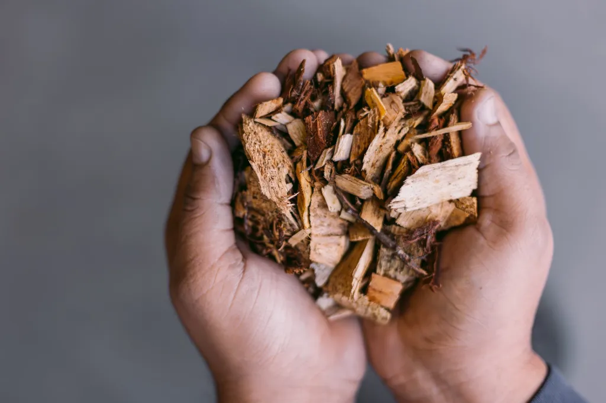
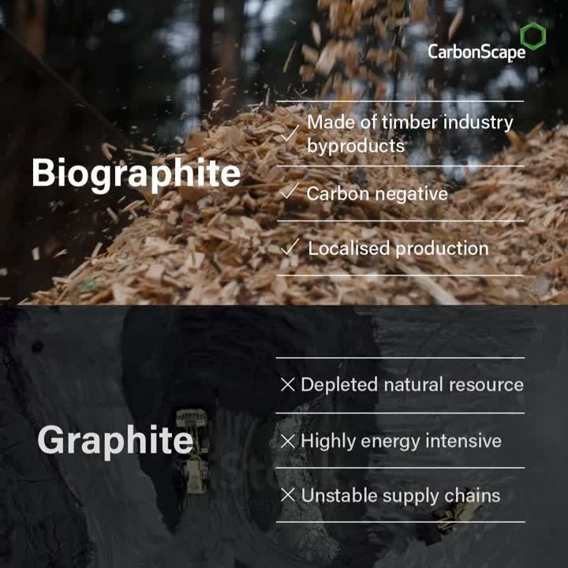

What is BioGraphite?
Biographite is a simple carbon material produced from forestry by-products, such as wood chips, allowing local and quick production to meet the growing demand. This carbon-negative process not only stops waste but also reduces carbon emissions from the sustainable forestry industry, establishing a circular economy.
Challenges Facing the Lithium-ion Battery Market
The lithium-ion battery market is facing four key challenges that need to be addressed:
- Supply Shortfall: The market needs to secure enough supply to meet the exploding demand, with a predicted graphite shortfall of 777,000 metric tons annually by 2030. Without addressing this fundamental challenge, countries cannot achieve their net-zero ambitions.
- Supply Chain Risk: China currently refines over 90% of the world's high-quality graphite, and with recent announcements of potential export restrictions, there is a critical need for countries to rapidly diversify and localize their supply chains.
- Dependence on High-emission Processes and Mining: The production of 'traditional' synthetic graphite relies on fossil fuel-based feedstocks and highly polluting manufacturing processes, while natural graphite depends on environmentally damaging mining.
- Finite Resources: Supplies of many raw materials for batteries are finite, necessitating the creation of circular economies and the kickstarting of a recycling revolution to safeguard the transition to clean transport and energy systems.

How BioGraphite Addresses These Challenges
Biographite offers a solution to the growing graphite demand and supply chain challenges. As the market becomes increasingly competitive, biographite provides cell and battery manufacturers with supply chain security, cost certainty, and a significant reduction in the carbon footprint of each battery, cutting it by almost a third.
Biographite: A Sustainable Synthetic Graphite Alternative
Biographite is a high-performing, cost-competitive, and carbon-negative alternative to both mined and synthetically produced graphite for lithium-ion batteries. It outperforms traditional synthetic graphite, which is preferred by cell and battery manufacturers due to its better performance characteristics.
Biographite is produced through a thermo-catalytic graphitization process, which is faster and less energy-intensive than the traditional synthetic graphite production process. This process runs at half the temperatures required and produces the critical material in a fraction of the time – hours, not weeks.
As a 'drop-in' replacement for traditional synthetic graphite, biographite can be applied across a wide range of sectors, from grid-scale batteries to electric vehicles and consumer electronics. Unlike traditional graphite sources, biographite production can be rapidly scaled, as it only takes 12 months to approve a biographite plant, compared to 12-18 years to commission a graphite mine.
Benefits and Positive Impact of BioGraphite
Biographite outperforms traditional synthetic and mined graphites, with significant societal and environmental benefits. Traditional synthetic graphite relies on fossil fuel-based feedstocks and highly polluting manufacturing processes, while mined graphite exacts a heavy toll on the surrounding environment, animals, and nearby communities.

Meeting the rapidly increasing demand for traditional synthetic graphite would require more than tripling the existing chemical production capacity and full dependence on high-emission processes based on fossil fuel-based feedstocks. Fulfilling demand with mined graphite would require almost 100 new mines, costing taxpayers hundreds of millions of dollars and entailing enormous societal and environmental costs.
In contrast, biographite enables the market to fill the forecasted shortfall while localizing production, securing and shortening supply chains, and lowering carbon emissions – driving a significant positive impact globally.
Market Response and Future Opportunities
The market response to the upcoming commercialization of biographite has been hugely positive, with major industry players seeking to partner with the company to strengthen and decarbonize their supply chains. The company remains open to working with additional strategic partners, such as cell and battery manufacturers, electric vehicle manufacturers, and original equipment manufacturers, to further drive the adoption of this sustainable and innovative solution.
Let’s see what happens. Amidst the industry looking for many plants and manufacturing units for cells, this might be one of the best advancements in manufacturing.